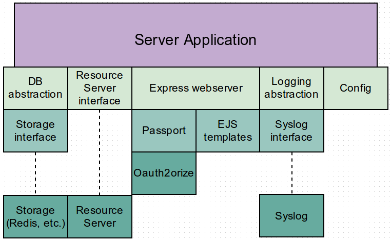

> sudo add-apt-repository ppa:chris-lea/node.js > sudo apt-get update > sudo apt-get install nodejsGet the source
> git clone https://github.com/jlabusch/oauth2-server.git > cd oauth2-serverMake
> npm installRun
> npm test
See also npm [stop|start|restart].
In its role as Authorization Server, this application acts as a broker for the interactions between the other participants. It maintains a registry of accepted Client sites, authenticates users against the Resource Server and manages the authorization granted by those users for Client access to their data.
The heart of the application is the Express / Passport / Oauth2orize stack that defines the framework in which the OAuth interactions take place.
The basic interactions are:
auth_server.views.login
auth_server.views.dialog EJS template
/api/ services) will be highly specific to the
Resource Server.
"auth_server": {
"hostname": "127.0.0.1",
"port": 8081,
"ssl": false,
"ssl_cert": null,
"ssl_key": null,
"session_secret": "REPLACE ME",
"views": {
"layout": "layout",
"login": "login",
"dialog": "dialog"
}
}
The Authentication Server portion controls the operation of the core Express webserver.
hostname: Used by automated tests to find the Express webserverport: Express webserver listen portssl: Flag to toggle between HTTP and HTTPSssl_cert: SSL certificate to use (implies ssl = true)ssl_key: SSL key file to use (implies ssl = true)session_secret: Value used to sign session cookiesFor the EJS template files, any name $X is translated to the
file ./views/$X.ejs.
views.layout: Page foundationviews.login: Body of authentication pageviews.dialog: Body of authorization pageIn ./lib/resource_server.js:
exports.MyResourceServerInterface = {
login: function(username, password, next){
// Authenticate the user and call next(...)
},
query: function(req, res){
// Retrieve protected resource
}
}
The login() function should invoke next in the following ways:
next(null, {id: UID, site_token: T, ...})next(null, false, {message: '...'})next(err)The query() function should use the site_token above (now
available as req.authInfo.site_token) to retrieve a protected resource.
In cases where no Resource Server software changes are being made and the protected
resources are not directly accessible, this could mean re-using an existing "remember me"
cookie mechanism.
The result should be written using the HTTP/S response argument res,
e.g. using res.json(...).
"resource_server": {
"type": "dummy",
"host": "127.0.0.1",
"port": 8084,
"basic_auth": "user:pass",
"user_agent": "OAuth-IdP/0.4.0"
}
type: The name of an object exported from
./lib/resource_server.jsAny additional options can be defined for your own implementation of the Resource Server interface.
See also the stub server in
./dummy-servers/resource_server.js, which is started automatically
via npm start when the configured type is dummy.
For a real world interface example, see the stuff_nation type
in ./lib/resource_server.js.
The application stores a few different kinds of state:
./clients.json.example)This is an area you're very likely to want to customize based on your existing ecosystem and deployment environment. Two storage examples are included: MemStore, a simple REST interface that might be a good way to bridge to slow data stores, and Redis, an interface to redis-server.
Both the Redis and MemStore interfaces support clustering and multiple application instances.
As per the component diagram, it's useful to think about storage on three levels:
./db/*.js provides functions for accessing specific
kinds of data in an implementation agnostic way./lib/store.js provides interfaces to "real"
databases, e.g. redis-server. It's relatively easy to add support for additional
storage types, and to switch between them by changing config on a per-table basis
(i.e. users and tokens can have different kinds of storage.)General storage can be configured independently for the following logical groups:
session: User sessionscodes: Authorization codestokens: Access tokensrefresh_tokens: Refresh tokensusers: User metadataOne final type, default, provides a catchall.
Out of the box, the supported storage interfaces are Redis and MemStore.
"storage": {
"default": {
"type": "MemStore",
"host": "127.0.0.1",
"port": 8083
}
}
TODO: describe MemStore REST API and dummy server
"storage": {
"default": {
"type": "Redis",
"db": 0,
"host": "127.0.0.1",
"port": 6379,
"ttl": 900,
"options": {}
}
}
Redis storage depends on the redis-server package (tested with 2.6.)
and the Node redis and hiredis modules.
type: "Redis" corresponds to the name of an object exported from
./lib/store.jsdb: Specific database instancehost: Redis server hostnameport: Redis server portttl: Expiry time of records (SETEX), or 0 for no expiry (SET)options: Additional options to be passed to redis.createClientThe list of accepted clients is stored in a JSON file on disk.
"client_credentials": {
"file": "./clients.json"
}
Entries in the file define client credentials, redirect URIs and allowed grant types.
{
"id": "2",
"name": "Automated tests",
"client_id": "test",
"client_secret": "2aa0c27d4a452d6bbb87e1b175f8e67ce75c000f",
"client_salt": "$4$3SByu9lP$nEyg3Ezxj+5BDsi8uAdwtTeU4Is$",
"allow_code_grant": true,
"allow_implicit_grant": true,
"valid_redirects": [
"http://localhost:8080/"
]
}
id: Unique internal client ID, which should never changename: Name suitable for display to user during authorization stepclient_id: Client ID as shared with the client siteclient_secret: SHA-1 hash of client_id:<secret>:client_salt.
We never store the clear text client secretclient_salt: Any random-ish stringallow_code_grant: true if Authorization Code Grants are allowed for this clientallow_implicit_grant: true if Implicit Grants are allowed for this clientvalid_redirects: A list of the valid redirect URIs for a client. Locking
clients down by redirect URI is a vital layer of protection against abuse.The application's configuration system was designed with a couple of goals in mind:
export NODE_CONFIG_DIR=${NODE_CONFIG_DIR:=config}
Use NODE_CONFIG_DIR to change where the application looks for
its configuration files. For production use this should probably be somewhere in
/etc/.
export NODE_ENV=${NODE_ENV:=development}
Use NODE_ENV to load configuration overrides for particular hosts
or platforms.
Configuration is loaded from (in order)
$NODE_CONFIG_DIR |-- default.json |-- $NODE_ENV.json `-- runtime.json
default.json should contain the bulk of your configuration, with
host/environment specific overrides in $NODE_ENV.json. By convention
runtime.json should only be used for overrides that you've applied
manually, i.e. outside of a proper deployment cycle, but in reality a config reload
will parse all three files, not just the latter.
Configuration can be reloaded at runtime by sending a SIGHUP to the parent process.
After the configuration is reloaded it emits a loaded event.
In general configuration is either used once on startup and never again (e.g.
webserver listen port) or accessed at runtime through config.get(),
which always accesses the most recently loaded value (e.g. log levels).